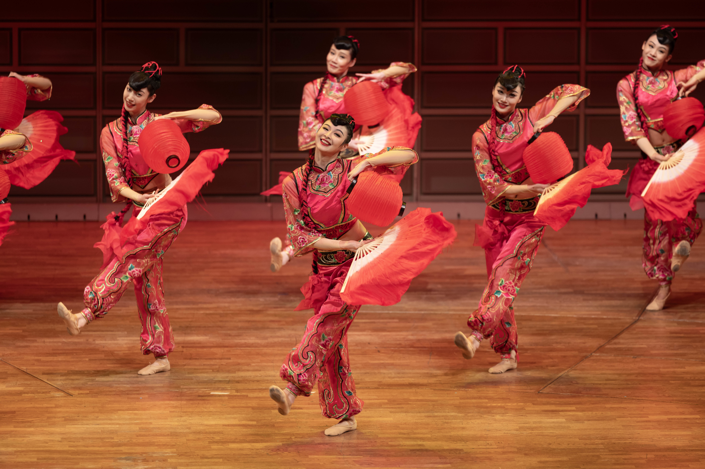

中国传统音乐舞蹈简介
中国传统音乐与舞蹈源远流长，有着数千年的历史，是中华民族文化宝库中的瑰宝。传统音乐以五声音阶为基础，形成了独具特色的音乐体系，强调音乐与自然和谐共生。传统舞蹈则通过肢体动作、表情传达情感，展现了中国人的精神世界与审美情趣。
中国传统音乐按照地域划分可分为北方音乐、江南丝竹、广东音乐等；按照用途可分为宫廷音乐、民间音乐、宗教音乐等。传统舞蹈则有宫廷舞蹈、民间舞蹈、戏曲舞蹈等多种类型，每种舞蹈都具有鲜明的地域特色和文化内涵。

传统乐器欣赏
中国传统乐器种类繁多，按照材质和发声原理可分为丝、竹、金、石、土、革、木、匏八类，下面为您展示其中几种具有代表性的乐器。
古琴
中国最古老的弹拨乐器之一，有"静、远、清、幽"的特点，被称为"圣人之器"。
古筝
汉族传统弹拨乐器，有"筝王"之称，音色优美，表现力丰富。
二胡
中国传统拉弦乐器，被称为"中国提琴"，音色哀婉细腻，极具表现力。
笛子
中国传统横吹竹管乐器，音色清脆明亮，可表现欢快和悲凉的情绪。
琵琶
中国传统弹拨乐器，有"弹拨乐器之王"的美誉，技巧丰富多变。
传统舞蹈欣赏
中国传统舞蹈有着悠久的历史，不同民族、不同地区都有其独特的舞蹈形式，下面介绍几种代表性的传统舞蹈。
传统音乐欣赏
聆听中国传统音乐，感受千年文化的韵律之美
高山流水
古琴演奏
0:00
4:30